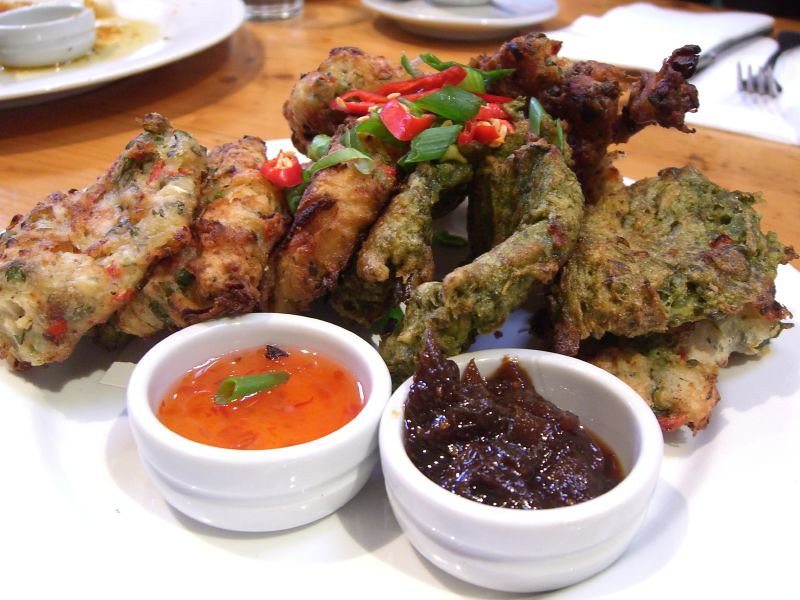

Jamaican Saltfish Fritters
Recipe from Monique C on allrecipes
Ingredients
- 6 ounces of dried salted cod fish
- cold water
- 1 cup all-purpose flour
- 2 teaspoons of ground black pepper
- 1 teaspsoon baking powder
- 1 tomato
- 2 green onions
- a half a cup of water
- vegetable oil
Instructions
- Soak cod in cold water for 8 hours to rehdydrate and remove salt
- Remove bones and skin from fish. Shred fish into small pieces
- Sift flour, pepper, and baking powder into a large bowl
- Add tomatoes, green onions, cod fish
- Pour a half a cup into the bowl with the rest of ingredients
- In a large pan, heat with medium heat one fourth an inch of oil
- Place spoonfuls of batter into the pan and fry until golden brown and crispy, which is about 5 minutes per side.
- Place fritter on a plate and pat fritters with paper towel
- Server fritters
Jamaican Saltfish Fritter (Stamp and go)

| Serving 1 | |
|---|---|
| Calories | 670 |
| Nutrients | % Daily Value |
| Total Fat 3g | 4% |
| Saturated Fat 0.6 | 3% |
| Cholesterol 94mg | 31% |
| Sodium 149mg | 6% |
| Total Carbohydrate 105.1g | 38% |
| Dietary Fiber 6.1g | 22% |
| Total Sugars 2.7g | |
| Protein 53.3g | |
| Vitamin D 0mcg | 0% |
| Calicum 305mg | 23% |
| Iron 9mg | 49% |
| Potassium 1336mg | 28% |
| Table Made using the verywellfit.com | |
Why This is My Favorite Recipe
My mom used to make this for me often when I was a kid. I love the saltiness of cod and the favors of the onions, black pepper, and tomato. These fritters are the perfect mixture of salty and savory.